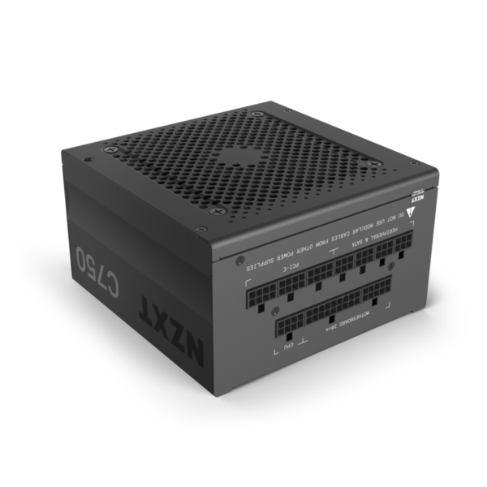

|
|
| FORM PEMBELIAN KOMPUTER DISINI!! |
PSU Modular
|
PSU Modular adalah jenis power supply yang memungkinkan kabel-kabel daya pada PSU dilepas atau dipasang sesuai kebutuhan. Hal ini memberikan fleksibilitas lebih dalam hal manajemen kabel, karena pengguna hanya akan menggunakan kabel yang diperlukan oleh komponen-komponen di dalam sistem. Modularitas ini membantu mengurangi kekacauan kabel yang sering terjadi di dalam casing, meningkatkan sirkulasi udara, dan mempermudah pemasangan dan perawatan. PSU Modular tersedia dalam berbagai kapasitas daya, sering digunakan pada build PC kelas menengah hingga high-end. Keunggulan utama dari PSU Modular adalah pengelolaan kabel yang lebih rapi dan peningkatan aliran udara di dalam casing, yang pada gilirannya membantu mendinginkan komponen-komponen dengan lebih baik. Selain itu, karena kabel yang tidak terpakai dapat dilepas, sistem akan lebih terlihat terorganisir dan bebas dari kabel yang tidak perlu. Namun, harga PSU Modular cenderung lebih tinggi dibandingkan dengan PSU non-modular atau semi-modular karena fleksibilitas dan kualitas tambahan yang ditawarkan. |
 |